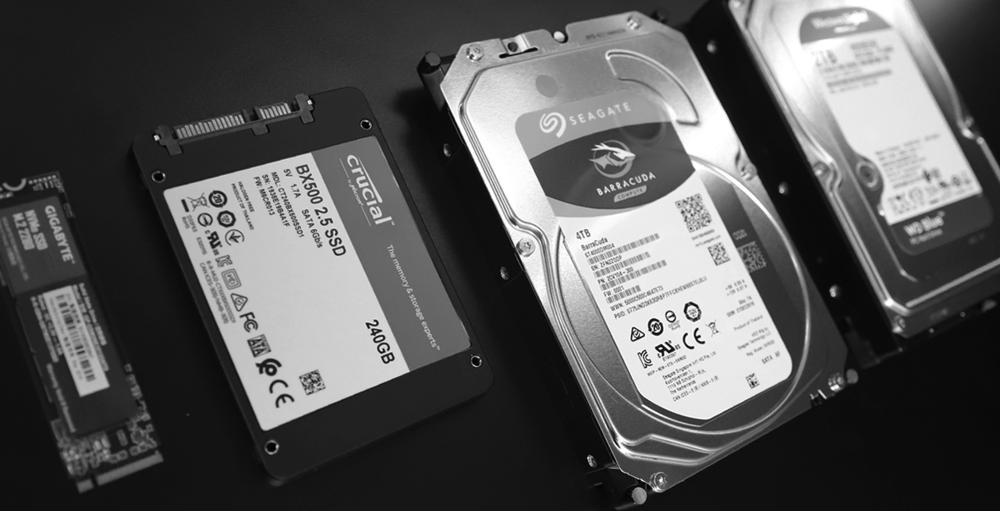
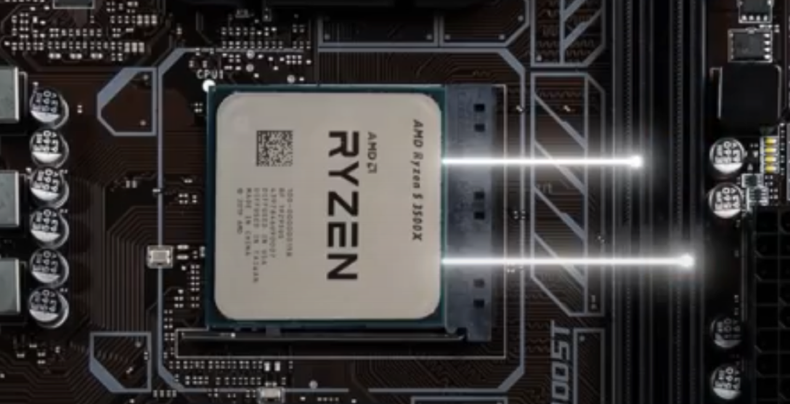
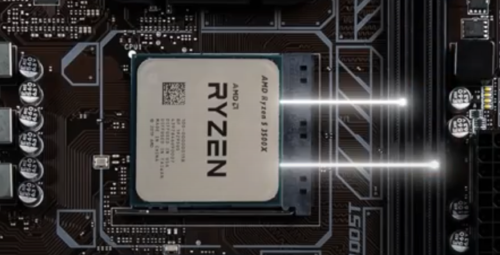

How Computer Works?
Before you need to learn about how different components work, you first need to learn how to build a PC/desktop. Watch the video below to learn more.
Overview
| Components in Your Desktop | Difference Between Laptop and Desktop | RAM | Chipset | What is PCI Express |
Components in Your Desktop
| Components in Your Desktop | Difference Between Laptop and Desktop | RAM | Chipset | What is PCI Express |
You need many components for your desktop. For example CPU(Central Processing Unit), GPU(Graphics Processing Unit), RAM(Random-Access Memory), Motherboard, CPU cooler, Storage like SSD and HDD, PSU(Power Supply Unit), case fans and the case for your desktop. Without one of them, your desktop wouldn't work.
CPU(Central Processing Unit):
CPU is like the brain of your desktop, most of the data will need to be calculated by it. When it's processing, it produces heats, so you'll need a CPU cooler for it to cool it down, or else you might damage it or make its life span shorter.

GPU(Graphics Processing Unit):
GPU is like your eyes, it helps your CPU to process the graphics and output them into your monitor. An important thing in GPU is VRAM, it is something like RAM, but for GPU. It works pretty much similar to the RAM on your motherboard.
RAM(Random-Access Memory):
RAM needs to communicate from your CPU to your storage. Without RAM, your storage would bottleneck your CPU's performance because your storage's speed is way slower than CPU. Thus, RAM's job is to take some data that the CPU needs or the data that might need and store the data in the RAM, once the CPU sends a request to the RAM for data, the RAM will quickly transfer the data to the CPU for CPU to process.
Motherboard:
The motherboard is the most important part of your desktop, without a motherboard, you can't build a PC. The motherboard is a PCB board with one CPU socket, lots of PCI expres(Peripheral Component Interconnect Express) slots, DIMM(Dual In-line Memory Module) slots, M.2 ports, SATA ports, 24 pins power port and 4 or 8 or 8 + 4 or 8 + 8 CPU power pins, VRMs and different chipsets like AMD's B450, B550 and X470, X570 and Intel's B460, B560 and Z490, Z590. Usually, the number of CPU pins could identify your motherboard's grade. The more CPU pins motherboard has, the more high-end it is. There are 4 common types of motherboard, E-ATX, ATX, M-ATX and ITX, the major difference is the size. E-ATX is the biggest, ITX is the smallest.
CPU Cooler:
The CPU cooler is a must-need component for your CPU, without it, your CPU will be overheated and damage it or make its life span shorter. There are 3 types of CPU cooler, the air cooler, AIO(All-in-one) or closed-loop liquid cooler and the expensive open-loop cooler. Air cooler, you'll see a gigantic heat sink with heat pipes in it and a fan or two fans. AIO is a liquid cooler that's included a pump that is connected to a radiator with 2 tubes and fans to give airflow to the radiator. An open-loop liquid cooler is a customizable liquid cooler, it's super expensive but with the best cooling. You can cool your CPU and GPU with an open-loop liquid cooler. I wouldn't recommend it to you because the cost-performance is too low.
Storage:
We have many different types of Storage, we have SSD, HDD, SSHD and an SSD, there are 2 different types, M.2 and SATA. M.2 will be the fastest because it's directly connected to the motherboard, SATA SSD will be the second-fastest because it uses electrics to transfer the data. Slowest are HDD and SSHD, HDD and SSHD are technically the same, it uses electricity to transfer the data as well, but it needs to spin the hard disk for the read and write header to read the disk data.

PSU(Power Supply Unit)
PSU is where the desktop getting power from, is like the heart of the desktop. Make sure you check your CPU and GPU's TDP(Thermal Design Power) for correct watts.
Case Fans and Case:
The case is not important, it won't affect your performance. It's only for you to assemble all the components into one piece and make sure the Front I/O(Input/Output) fits your requirement. But case fan is a bit important, you have to at least put 1 fan at the back of the case, near the motherboard I/O. It's the only part that will affect your temperature a lot. If you are using an air cooler for CPU, then you have to use more fans to make an airflow.

That is all the components you need for your PC.
Difference Between Laptop and Desktop
| Components in Your Desktop | Difference Between Laptop and Desktop | RAM | Chipset | What is PCI Express |
The most obvious different part is the size. The laptop has great mobility for you to bring it around, but its cooling and limited power make the performance are 2/3 of desktop performance. To increase the performance, you can use eGPU(External GPU) for the laptop. Another obvious difference is expandability. For most of the laptops out there, you can only expand or change RAM and SSD, CPU and GPU are using BGA(Ball Grid Array) soldered on the PCB. You can't remove it easily, even you removed it, you need to make sure it's suitable or not.
Short Conclusion:
Laptop:
The laptop is for the people who want to bring their device around with them, but the major problem is the performance of it.
Desktop:
The desktop is gigantic and heavy, you can't move it around easily, even it's an ITX size motherboard, it is not very mobility. But the performance, cooling and expandability are much better than the laptop.
Short Conclusion:
Laptop:
The laptop is for the people who want to bring their device around with them, but the major problem is the performance of it.
Desktop:
The desktop is gigantic and heavy, you can't move it around easily, even it's an ITX size motherboard, it is not very mobility. But the performance, cooling and expandability are much better than the laptop.
RAM
| Components in Your Desktop | Difference Between Laptop and Desktop | RAM | Chipset | What is PCI Express |
RAM usually are located on the right side of the motherboard, check here to know its job. RAM is quite important to your PC, your PC won't work without RAM. And now I will talk about some facts about RAM.
Why some stores selling 1 stick of RAM in a pack and 2 sticks of RAM in a pack? What's the difference? Should I buy two 1 stick RAM pack or one 2 stick RAM pack?
Some stores sell 1 stick RAM in a pack because someone just needs an upgrade for their PC and the PC works fine with 1 RAM only. The difference between 1 stick RAM pack and 2 stick RAM pack is 2 stick RAM pack can decrease the chance of incompatibility, but nowadays the technology is much more stable than past, as long as you buy 2 same frequency, same size RAM, same model and the same company, then it'll be fine. But I would still recommend you to buy 2 sticks RAM pack because if one of the RAM stick breaks, and it still has its warranty, then usually the companies who made it will send you a new pack of 2 RAM sticks. If you bought two 1 RAM stick packs, and one of the RAM broke, and it still has its warranty, then the company will only send you 1 RAM stick pack. Thus, buy 2 RAM sticks pack.
What are 1DPC and 2DPC?
DPC is DIMM Per Channel, DIMM is the name for RAM slot and the channels are the circuits that connect the CPU socket to the RAM slots. Thus, 1 DIMM Per Channel means 1 RAM slot has one circuit that connects to the CPU, 1DPC motherboard will only have either 2 or a maximum of 4 DIMM slots on it. 2 DIMM Per Channel means there are 2 RAM slots are using one circuit that connects to the CPU, they need to share, 2DPC motherboard will only have either 4 or a macimum of 8 DIMM slotss on it.
Why do I need to put 2 RAM sticks on 2 and 4 DIMM slots? Why not 1 and 3 slots?
Due to the design of most of the motherboards nowadays, the companies use 2DPC(2 DIMM Per Channel) for most of the motherboards, only a few motherboards like ITX size motherboard or the motherboards that are designed for overclocking uses 1DPC(1 DIMM Per Channel). There are 3 ways to connect your RAM to the CPU, Direct Topology, T-Topology and Daisy-Chain Topology.
Direct Topology:
Direct Topology is usually used for 1DPC motherboards, it won't affect you in any amount of RAMs.

Direct Topology, picture above
T-Topology and Daisy-Chain Topology:
These designs are used for 2DPC motherboards, the only difference is the design it. If you need 4 RAM sticks, then the T-Topology motherboard can provide these RAM full performance. If you need 2 RAM sticks, then Daisy-Chain Topology will be the best choice. But if you don't know which topology is your motherboard using, and you have 2 RAM sticks, just put it in slots 2 and 4.
T-Topology, picture above
Daisy-Chain Topology, picture above
Why some stores selling 1 stick of RAM in a pack and 2 sticks of RAM in a pack? What's the difference? Should I buy two 1 stick RAM pack or one 2 stick RAM pack?
Some stores sell 1 stick RAM in a pack because someone just needs an upgrade for their PC and the PC works fine with 1 RAM only. The difference between 1 stick RAM pack and 2 stick RAM pack is 2 stick RAM pack can decrease the chance of incompatibility, but nowadays the technology is much more stable than past, as long as you buy 2 same frequency, same size RAM, same model and the same company, then it'll be fine. But I would still recommend you to buy 2 sticks RAM pack because if one of the RAM stick breaks, and it still has its warranty, then usually the companies who made it will send you a new pack of 2 RAM sticks. If you bought two 1 RAM stick packs, and one of the RAM broke, and it still has its warranty, then the company will only send you 1 RAM stick pack. Thus, buy 2 RAM sticks pack.
What are 1DPC and 2DPC?
DPC is DIMM Per Channel, DIMM is the name for RAM slot and the channels are the circuits that connect the CPU socket to the RAM slots. Thus, 1 DIMM Per Channel means 1 RAM slot has one circuit that connects to the CPU, 1DPC motherboard will only have either 2 or a maximum of 4 DIMM slots on it. 2 DIMM Per Channel means there are 2 RAM slots are using one circuit that connects to the CPU, they need to share, 2DPC motherboard will only have either 4 or a macimum of 8 DIMM slotss on it.
Why do I need to put 2 RAM sticks on 2 and 4 DIMM slots? Why not 1 and 3 slots?
Due to the design of most of the motherboards nowadays, the companies use 2DPC(2 DIMM Per Channel) for most of the motherboards, only a few motherboards like ITX size motherboard or the motherboards that are designed for overclocking uses 1DPC(1 DIMM Per Channel). There are 3 ways to connect your RAM to the CPU, Direct Topology, T-Topology and Daisy-Chain Topology.
Direct Topology:
Direct Topology is usually used for 1DPC motherboards, it won't affect you in any amount of RAMs.

Direct Topology, picture above
T-Topology and Daisy-Chain Topology:
These designs are used for 2DPC motherboards, the only difference is the design it. If you need 4 RAM sticks, then the T-Topology motherboard can provide these RAM full performance. If you need 2 RAM sticks, then Daisy-Chain Topology will be the best choice. But if you don't know which topology is your motherboard using, and you have 2 RAM sticks, just put it in slots 2 and 4.
T-Topology, picture above
Daisy-Chain Topology, picture above
Chipset
| Components in Your Desktop | Difference Between Laptop and Desktop | RAM | Chipset | What is PCI Express |
The old motherboard usually has 2 chips on it, one is located at the middle/North of the motherboard, another one is located at the bottom right/South of the motherboard, We call it Northbridge and Southbridge. Nowadays we only have the Southbridge chip, and we just call it a chipset.
What is its job?
Let me give you an example, imagine the CPU is the CEO of a company, does he needs to communicate with everyone? No, the CEO only communicates with important customers or staff like the GPU and RAM. So the job of the chipset is to communicate with the small workers like SSD, front I/O port, PCI express, back I/O port and many more.
Different company's chipsets and CPUs are different. Intel's CPU only supports PCIe x16 and AMD's CPU supports PCIe x20.
This means, if you have a GPU and an M.2 NVMe SSD, for Intel's CPU, only GPU will connect straight to the CPU, because GPU needs all PCIe x16, and the SSD will connect to the chipset. For AMD's CPU, because it supports PCIe x20, so your GPU and SSD can connect straight to the CPU.
Short Conclusion:
A chipset is a chip that connects many different things and combines them and transfers the data to the CPU by PCIe x4
What is its job?
Let me give you an example, imagine the CPU is the CEO of a company, does he needs to communicate with everyone? No, the CEO only communicates with important customers or staff like the GPU and RAM. So the job of the chipset is to communicate with the small workers like SSD, front I/O port, PCI express, back I/O port and many more.
Different company's chipsets and CPUs are different. Intel's CPU only supports PCIe x16 and AMD's CPU supports PCIe x20.
This means, if you have a GPU and an M.2 NVMe SSD, for Intel's CPU, only GPU will connect straight to the CPU, because GPU needs all PCIe x16, and the SSD will connect to the chipset. For AMD's CPU, because it supports PCIe x20, so your GPU and SSD can connect straight to the CPU.
Short Conclusion:
A chipset is a chip that connects many different things and combines them and transfers the data to the CPU by PCIe x4
What is PCI Express
| Components in Your Desktop | Difference Between Laptop and Desktop | RAM | Chipset | What is PCI Express |
PCIe stands for Peripheral Component Interconnect Express
How does it work? What is its job?
PCIe is like a road for vehicles, and vehicles are the data that you'll need to transfer. PCIe by 1/PCIe x1 is a road that has one lane only, PCIe by 4/PCIe x4 is a road that has 4 lanes, which means it can transfer more vehicles. Thus, the more lanes it has, the more data it can transfer. PCIe have 2 types of port on the motherboard, the long one slot and the short one M.2 port. Usually, the motherboards give you many different PCIe slots for you to expand. For example PCIe x16, PCIe x8, PCI x4, M.2 PCIe and PCIe x1. Since most of the data needs PCIe to transfer like your SSD, GPU, USB drive and more, you can do a lot with the PCIe slots and even the M.2 ports. You can check it by clicking here.
How does it work? What is its job?
PCIe is like a road for vehicles, and vehicles are the data that you'll need to transfer. PCIe by 1/PCIe x1 is a road that has one lane only, PCIe by 4/PCIe x4 is a road that has 4 lanes, which means it can transfer more vehicles. Thus, the more lanes it has, the more data it can transfer. PCIe have 2 types of port on the motherboard, the long one slot and the short one M.2 port. Usually, the motherboards give you many different PCIe slots for you to expand. For example PCIe x16, PCIe x8, PCI x4, M.2 PCIe and PCIe x1. Since most of the data needs PCIe to transfer like your SSD, GPU, USB drive and more, you can do a lot with the PCIe slots and even the M.2 ports. You can check it by clicking here.
That's it, once you finished these articles, you should've know the basics about computer hardware. Click here to give us support.
Contact Me: michael.chu@student.tdsb.on.ca
Contact Me: michael.chu@student.tdsb.on.ca